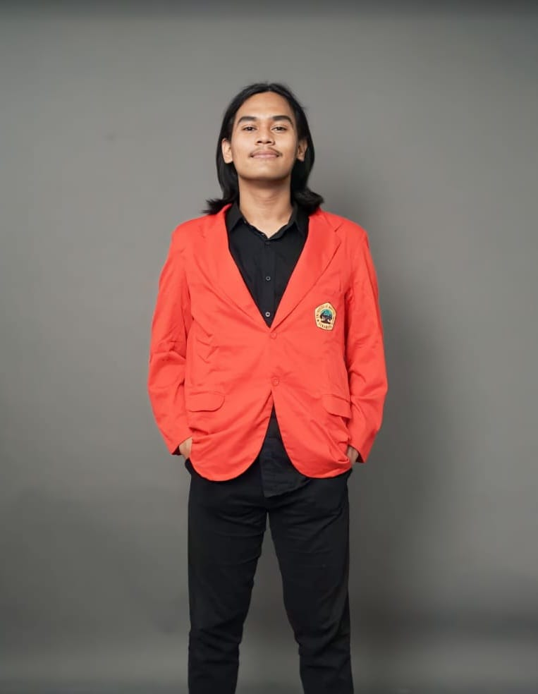

Proyek utama · Studi kasus
SIPELANTIK
Sistem Pelayanan TIK: platform ITSM berbasis ITIL v4 untuk unit layanan TI organisasi. Menangani dua alur — Service Request dan Incident Management — dari tiket masuk sampai penutupan.
Solo developer · IT Superman · PALUGADA
Saya menulis kode setelah alur kerjanya jelas dulu.

01 — Proyek
Lima proyek, dua ranah: aplikasi untuk klien, dan satu sistem layanan TI yang jadi bahan skripsi. Klik kartunya untuk lihat masalah yang diselesaikan dan peran saya.
Proyek utama · Studi kasus
Sistem Pelayanan TIK: platform ITSM berbasis ITIL v4 untuk unit layanan TI organisasi. Menangani dua alur — Service Request dan Incident Management — dari tiket masuk sampai penutupan.
02 — Cara kerja
Urutan ini yang saya pakai di hampir semua proyek — datang dari kebiasaan membedah alur layanan, bukan dari template pengembangan.
Petakan dulu alur yang sedang berjalan: siapa melakukan apa, di titik mana macet, dan data apa yang hilang di sana.
Tentukan status, peran, dan jalur eskalasi sebelum menyentuh antarmuka. Untuk konteks layanan, kerangkanya ITIL v4.
Mulai dari alur inti yang paling sering dipakai — bukan dari fitur yang paling menarik untuk dipamerkan.
Dokumentasi, serah terima, lalu perbaikan berdasarkan bagaimana sistemnya benar-benar dipakai.
03 — Profil

Saya Nixon Prayoga, mahasiswa Informatika sekaligus solo developer. Yang membuat cara kerja saya sedikit berbeda: latar ITIL v4 membuat saya terbiasa melihat software sebagai layanan yang harus dijalankan orang setiap hari — bukan sekadar fitur yang selesai dibangun.
04 — Kontak
Terbuka untuk diskusi proyek, kolaborasi, atau sekadar bertukar pikiran soal pengembangan web dan kehidupan.